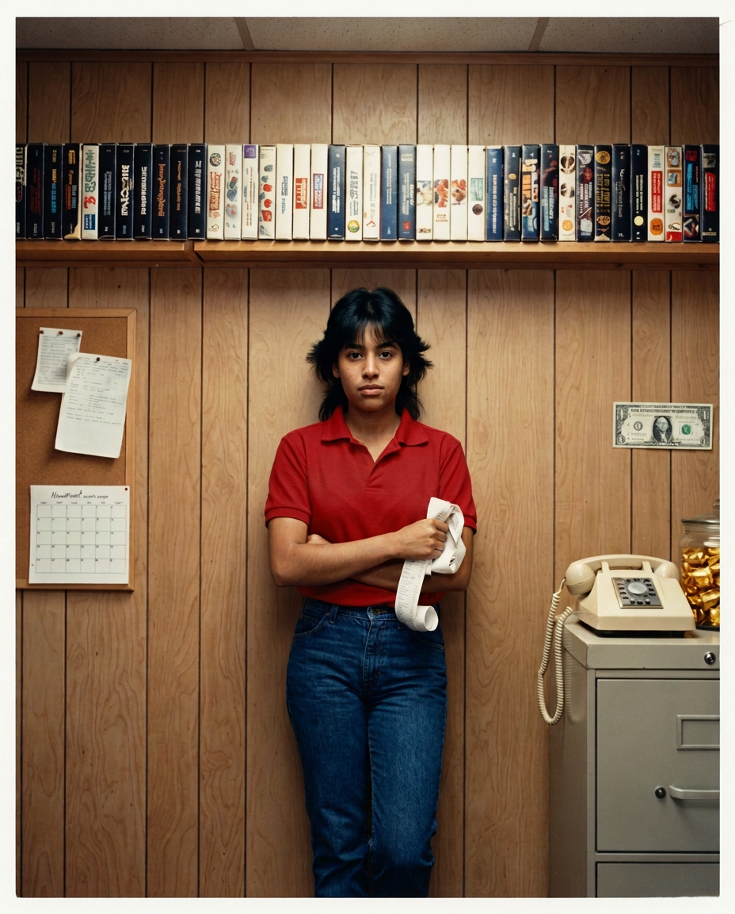
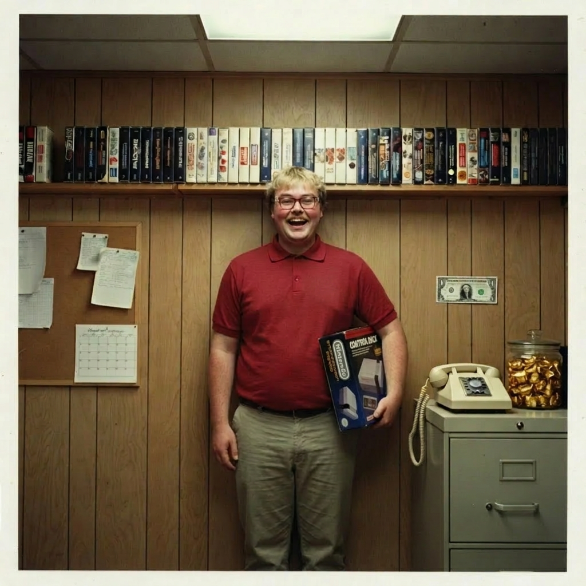
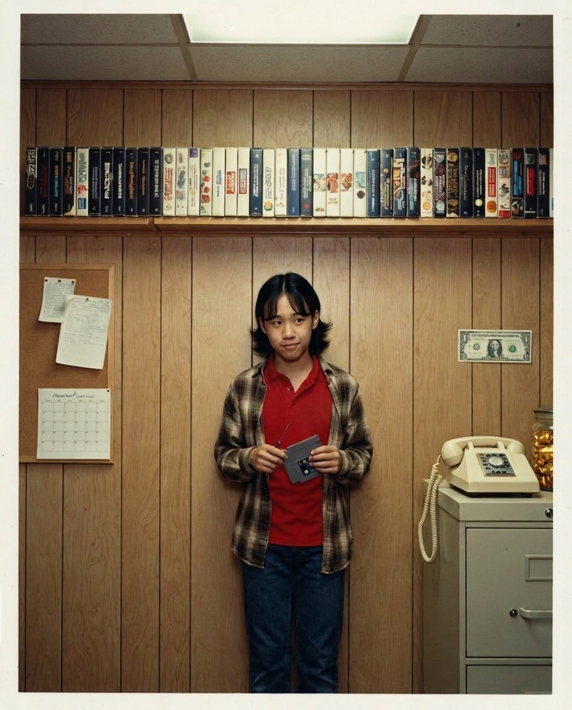

the rules were grandma jean's: every hire, first day, one
photo against the office wall, pinned to the corkboard. staff called it
"making the wall." every time the company moved — queens back office, the
place over the bank on milwaukee ave, the tower — three things moved with
it: the corkboard, jean's candy jar, and the first dollar, re-taped to each
new wall by whoever was most senior and least busy. the spot was called the
founders' corner in every building. the offices changed completely. the
photos, the jar, and the dollar didn't.
on september 30, 2016, all three left the building in uncle
nick's truck. nobody invoiced them. in 2025 i drove to evanston with a
flatbed scanner and we spent a weekend taking every photo off the corkboard,
scanning it, and pinning each one back EXACTLY where it was. this page is
that weekend. several hundred still to go — i'm doing them in order. — t.m.
1986 — OPENING DAY (the founding six)
the first row, top-left of the corkboard. jean shot all of these
on the same afternoon with morty's camera. the butterscotch pinned next to
her photo is not decoration. do not touch it. it has been there since 1997.

[ SCANNING... ]
NICK REEVES
founder. day one, aug 6 1986.
yes that is a zapper. yes he brought it to a staff photo. 30 years old
and completely certain. he was right for about a decade.

[ SCANNING... ]
JEAN MACY
co-founder. "chief everything
officer." 1986–1996.
hand on the candy jar, where it always was. she
invented the wall, so hers is the first photo that was ever on it.
grandma. i miss you. everyone does.

[ SCANNING... ]
MORTY FEIN
first investor, 1918–2003.
not technically staff. try telling him that. demanded store No. 1 AND a
spot on the wall, got both. the cigar was never lit. great-uncle. legend.

[ SCANNING... ]
RAMONA ORTIZ
employee #1. register, day one.
store manager by '91.
refused to pose properly. jean kept the photo
anyway and said "that's the most honest one on the wall." ramona ran this
place. everyone knew. even nick knew.

[ SCANNING... ]
GARY "BIG GARE" PLOTKIN
stockroom, 1986–2016.
all thirty years.
holding the console like a football because he had
already dropped one that morning. broke exactly one of everything.
stayed to the last day. still has all his polos.

[ SCANNING... ]
KEVIN NAKAMURA
repairs, age 16, after school.
fixed what gary broke. the screwdriver behind the ear was not a prop, it
lived there. wouldn't look at the camera. jean said give him a year.
(she was right. she was always right.)
1997–2003 — THE FOUNDERS' CORNER, FIRST HQ
the first move: the corkboard came off the queens wall and
went up over the bank on milwaukee ave — new office, white drywall, teal
stripe, same jar on the cabinet, same dollar re-taped. the suits started
making the wall too. some of them even meant it.

[ SCANNING... ]
CHIP HARRINGTON III
CEO 1997–2003.
"the
best memorial is scale." the teeth are real in the sense that they
exist. left with $18M and a fax problem. the wall keeps what the
settlement sealed.
[ dark rectangle. unfaded. a photo hung here from 1997
to 2004, and then it didn't. you know whose. the archive remembers what
the wall was asked to forget: person_id 4, termination_for_cause. i
scanned the gap anyway. history has gaps. ]
M▓▓▓▓▓▓ V▓▓▓
CFO 1997–2003.
removed by
order of legal, april 2004. i found a duplicate print in a drawer in
evanston. it stays in the drawer.

[ SCANNING... ]
DALE WICKERSHAM
EVP pre-owned & trade,
1999–2011.
the trade-in formula was his. "thirty cents on your
childhood," half in store credit. (2025 update: i checked the archive.
it really was thirty. exactly. every single year. somehow that's worse.)
never broke a single law. that's the scary part. appraising a cartridge
in his own staff photo.
2004–2015 — THE TOWER
move two: up the elevator. corporate put the corkboard in a
brushed-steel frame with a brass plaque, marble floor, skyline behind it,
like it was an exhibit. which, by then, it kind of was. the dollar stayed
taped. someone in facilities tried to frame it in 2006 and got a memo from
uncle nick so polite it's studied.

[ SCANNING... ]
BROCK ROSSITER
CEO 2003–2009.
rode the
biggest wave in gaming history and believed, sincerely, that he was the
wave. peak profits, peak stores, peak sweat. resigned to spend more time
with his boats (plural).
(the photo is dated feb 2003 — eight
months before his official start. he came in for the succession
announcement and demanded his wall photo on the spot. the archive says
he started 10/01. the wall says brock didn't wait. both are true.)

[ SCANNING... ]
GORDON PYLE
CEO 2009–2014.
"nobody will
ever download a video game." held a DVD up for his staff photo like it
was evidence. it was, your honor. just not of what he thought.

[ SCANNING... ]
PRISCILLA BLAINE-HURST
CEO 2014–2016.
the
last photo ever pinned to the wall. project phoenix. EmporiumBucks™.
turned around four companies; all four were later found facing the wall.
ours too, in the end. hers is the only photo that's perfectly straight.
THE ANNEX — not the wall
two photos that were never pinned, kept here because the
record should be complete.

[ SCANNING... ]
TODD MACY (me)
webmaster, 1998–2016. fansite,
1998–forever.
i never made the wall. jean's rule never reached the
webmaster and by the time anyone noticed, there was no jean to ask. this
webcam frame is all that exists of 14-year-old me at "work." honestly?
correct.

[ SCANNING... ]
NICK REEVES, SEPT 29 2016, 11:48 PM
the last
photo of the company alive. not a wall photo — the wall was already in
the truck. that's the evanston register, the last sale ($3.67), and the
candy jar one minute before he gave it away. thirty years, minus one
day, after jean's first photo.
scanning continues. next up: ramona's 1991 store-manager
photo, the 1994 IPO-day polaroid, and about four hundred people whose names
you don't know and whose faces held this thing up for thirty years. they're
all coming. the wall keeps everyone. — t.m., evanston/queens, 2025–2026
© 1998–2026 todd macy — a FAN page. the corkboard itself resides in a garage
in evanston, illinois, under a tarp, next to a truck. the jar is in the
house. the dollar is in nick's wallet. none of it is for sale.
"the register only remembers what you did, not why." — n.r., 2016
Nick's Gaming Emporium is a fictional company and everyone here is a fictional character; this is a fan site made for a synthetic-data project. No real business, person, or product is depicted.
<< BACK 2 THE FANPAGE